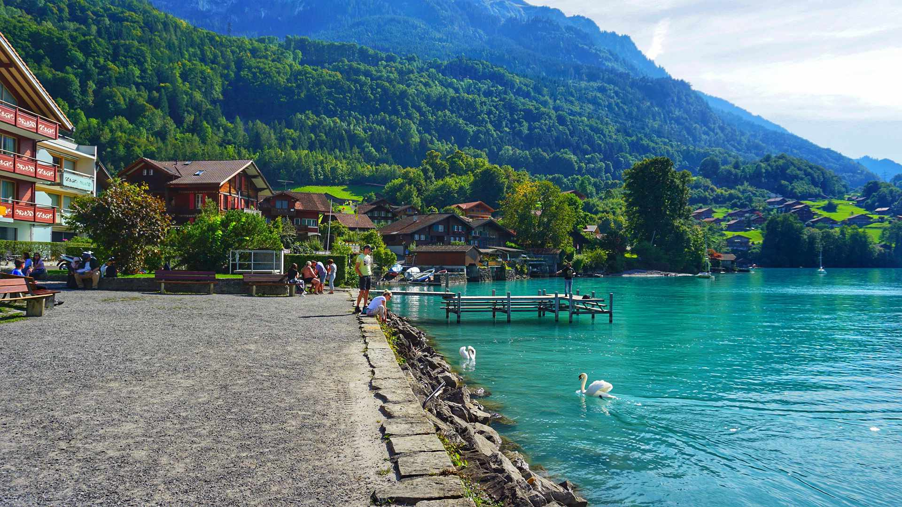
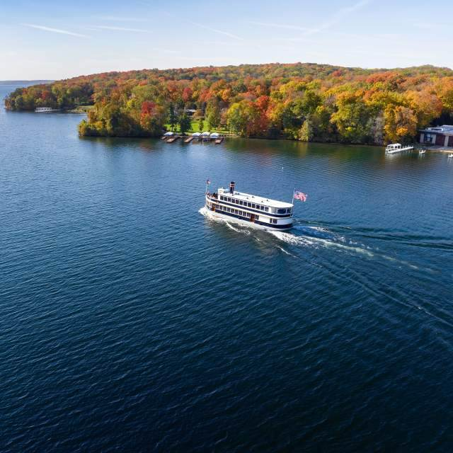
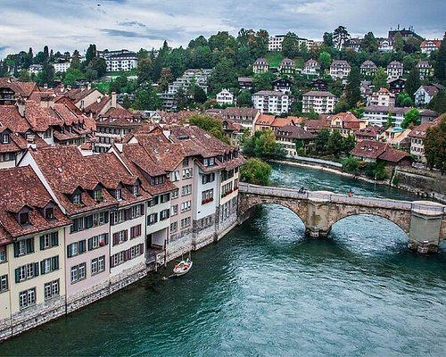
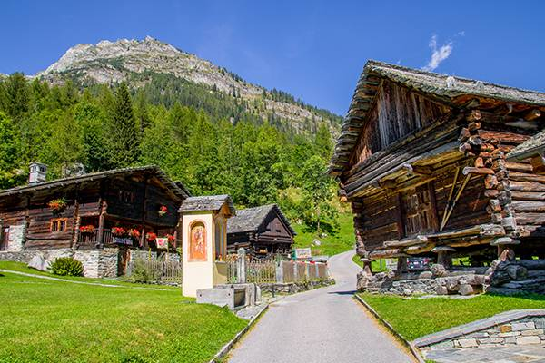

SWITZERLAND
Switzerland is a mountainous Central European country, home to numerous lakes, villages and the high peaks of the Alps. Its cities contain medieval quarters, with landmarks like capital Bern’s Zytglogge clock tower and Lucerne’s wooden chapel bridge. The country is also known for its ski resorts and hiking trails. Banking and finance are key industries, and Swiss watches and chocolate are world renowned.
LAKE BRIENZ,ISETWALD
This is located at the small village of Iseltwald and the lake landing where the piano scene was filmed is situated in front of a private residence next to the port of Harbor Iseltwald.
LAKE GENEVA
Lake Geneva (or Lac Léman) is a crescent-shaped lake shared between France and Switzerland, and overlooked by the Alps. Geneva, the Swiss city at its southern tip, is a diplomatic hub with luxury shops and a cobbled old town.On the southern, French side, is the spa town and resort of Évian-les-Bains.
BERN
Bern, the capital city of Switzerland, is built around a crook in the Aare River. It traces its origins back to the 12th century, with medieval architecture preserved in the Altstadt (Old Town).
BOSCO GURIN
Bosco/Gurin is a municipality in the district of Vallemaggia in the canton of Ticino in Switzerland. The village is near the end of the valley of Bosco Gurin, near the Italian border.